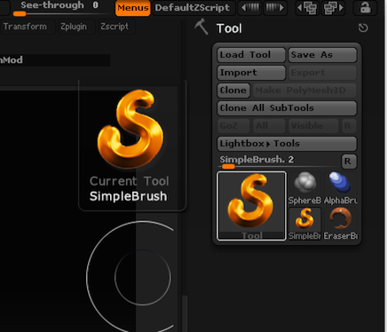

ZBrush学ぶ
概要
モデリング楽しいね！ っていいつつ、自分が使えるのBlenderとMetasequoia(Winのみ)だったので、
もうちょっと主観的に楽にできることを増やして遊べるようになるために、ZBrushやってみる。
現状 2014/11/02 1:46:09
起動時
lightboxが邪魔なので起動時は表示されないようにする
Preferences > Lightbox > Open At Launchを押してオフにし、Preferences > Config > Restore Custom UI を押す。
基本操作系
回転
右クリックドラッグ
shiftを足して制限付き
ズームイン、アウト
右クリック + Ctrlドラッグ
オブジェクトの移動
右クリック + altドラッグ
オブジェクトを全画面に収まるようにカメラ調整
Fキー
ブラシ一覧の表示
Bキー
文字打ちによる絞り込みがあり、1文字打った段階で、2段階目の候補に対していろいろアルファベットが振り分けられるので、 Sublimeのやつとは違う感じ。
Right Shelfに選択したメニュー項目を表示
alt + クリック
ブラシのadd か、 sub の切り替え
ctrl
スムーズブラシへの切り替え
space
ブラシのサイズ調整
Sキー
マスク系
マスクペンでのマスクの作成
ctrl + オブジェクト上からオブジェクトをドラッグ
マスク部分解除
オブジェクト上で ctrl + alt + ドラッグ
矩形でマスク選択
オブジェクト外からドラッグ
マスクの反転
オブジェクト外でctrl + クリック
オブジェクト外でctrl + ドラッグで、解除
すべてをマスク
ctrl + A
Visible
visible範囲を限定
オブジェクト上でctrl + shift + ドラッグ
解除
オブジェクト外でctrl + shift + クリック
反転
オブジェクト外でctrl + shift + ドラッグ
操作系2
下絵
Draw > Front-Back > Map1 > Import とかで入る。
開いてすぐに思うこと
最初のオブジェクトどうやって出すんだろ。
 →まずあり方として、Tool の中に、現在選んでいるツールが表示されている。
→まずあり方として、Tool の中に、現在選んでいるツールが表示されている。
ここに気づくと、
・Tool の中の左上の項目は現在選ばれているアクティブなツール
・ツールっていうか素材の意味な
という感じに思考が進んだ。
なるほど。
で、Current Tool を選ぶと、ウインドウが出てきたのでZSphereを選ぶことができた。
リセット
なにもかもリセット：
Preference > Init ZBrush
Edit外してDrawだけのとき置いちゃったものリセット：
メニュー > Layer > Clear
ZSphereでのモデリング
Editモードでぽいぽい足せる。
足せない場合、メニュー上部の Add と Sub が両方消えてることがあった。
っていうか両方消せるんですね。便利(?)
多分何かの拍子にショートカットを押しちゃってるんだろう。
Tool > Make Polimesh 3D で変換すると、Divideを押すことができた。
このあたりの状態遷移は一度図にすると助かりそう。
ZSphereでの操作モードについて
MoveとかScale、Rotateが使える。
Sphere単位で動かせるので便利。


ZBrushからSkinを作る
Aキーでプレビューがでる。が、でる前に死ぬことが何回かあったので死ぬ前にセーブしよう。
Tool > Adaptive skin > Make Adaptive Skin で作れる。
シンメトリーな編集
Xキーを押すと、対照移動するポインタが出る。
出無い場合、、、どうなってるんだろうな、、
→今見ている視点の軸がおかしい。気付くのに時間がかかった。
視界に対して奥行き方向にカーソルが出てる。たぶん。
Transform > Activate Symmetry で、現在対象になる軸がわかるのでそこでチェック。
操作系3
サブツール
オブジェクト(ツール)を複数に分割したもの一式。
Extractとかで作り出す。
パーツ分割(Extract)
マスクする > Subtool > Extract > accept でマスクした範囲を別のツールとして分離できる。
ZBrushの概念で何だろうって思ってたこと
ZBrushにおいてTool って名前で名前で扱われるのはまさに「編集対象」とそれらのコレクションのことで、
おま、、それなんで、、Toolって名前にしたし、、、とかまだ同調できてない事柄がある。
ZBrusherさんになんでそういう概念なのか聞いてみたい。
割り切ればそういうものだと納得できる程度には一貫してる気がする。
困ってること
GeometryのDivideが出ないことがある？
ZSphereでSkin作成→Divideができない。なんでだろ。
→ そもZSphereを変更できてないっぽ。Preview で落ちるとかよくある感じなのでセーブ必須。
こうなっちゃったらどうするの？

カーソルだけ暴れてる状態。
消すのは、Layer > Clearから出来る。
で、
設定が2.5Dモードになっている + シンプル・ブラシを選んでる場合こうなっちゃうそうなので、そのへんを調整する。
→Tool > 左下に写ってるのがCurrent Tool
んで、こいつを変更する。3DMeshesの中身だったらなんでもいい。

キャンパスにオブジェクトがいっぱいでる
次にこのモードになる。困る。
一個でいいからなにかを置いて、Tキー or Edit ボタンを押す。やったぜEditモード。
プリミティブなオブジェクトが置かれているのでモデリングできない
Tool > Make Polimesh でポリメッシュ化する。

Devideの意味
ZBrushは複数の解像度のあいだを行ったり来たりできる。
最終的なポリゴン数に関しては、わりと「あとで考える」的。
で、

Divideを行うと、
・元のポリゴン分割のモデル
に加えて、
・細かくしたポリゴン分割のモデル
を新たに作り出す。
んで、この新旧のモデルをそれぞれ保持する。
shift + Dで下のDivideに戻る
D + 上のDivideがある場合上のDivideに移動
control + D + 現在が最高位のDivideのとき、上方向のDivide実行
モードの話
形状編集を行うEditモードと、
移動とか拡大縮小とかを行うMove, Scale, Rotateモードがある。
Moveモード

Scaleモード

Rotateモード


Fキーで現在Activeなサブツールを視界の真ん中に
便利。もう一度押すとサブツール内で最大のものにフォーカスする。
Tool > LoadToolから物事を扱うようにすると楽
Ztlのみを扱うと楽なのではっていう話。
ZProjにはテクスチャとかも入るので、そっち使うのが便利っぽいんだけど、履歴とかも入ってクッソ重くなっていくのでモデル (=ツール)はZtlのみで保存するといいのでは？っていう。
Tool > LoadToolとかSaveとかでモデル=ツールを扱うと、部品を個別に読み込み直したりとかができるので、便利かもしれない。
落っこちたら今まで作ったモデルはどうなるの！？
LightBox > QuickSave の中に入ってるかも。
もしくは、
LightBox > Brush > Recorded_Document フォルダとか。
Tool > SubTool
モデルをレイヤー分けみたいな感じで持っておける。
んでNキーでSubToolの一覧(ActiveなSubToolは含まれていない)を出すことができる。
SubToolのアクティブの切り替え
上下キーでできる。
ctrl + 上下キーで、ActiveなSubToolのリスト上での位置を変えられる。
また、キャンバス上でalt + クリックで、ActiveなSubToolを切り替えられる。
SubToolのDivideLevelをまとめて切り替え
Tool > SubTool > All Low or All High で、すべてのSubToolがそれぞれ保持しているDivLevelを一気にいじれる。
SubToolのコピー
Tool > SubTool > Duplicate でActiveなSubToolのコピーが作れる。
別のモデルをSubToolとして読み込む
Tool > SubTool > Insert で、外部のモデルを現在のモデルへと、SubToolとして読み込むことができる。
パースペクティブの比率を変える
地味にやりたいことがある。
Draw > PerseP > AngleOfView で変更可能。
shift + Pでフロアの面を表示
Floorボタン上のx,y,zボタンをクリックすると、対応する床がキャンバスに表示される。
LocalTransformで回転軸制御
LocalTransform ボタンで、キャンバスでのモデル回転の際の回転軸の固定ができる。
ボタン上のxyz, y, zとかそのあたりを選択すると変わる。
PolyFrameでポリグループの区分けが視覚化できる
LineとかFillのボタンがあり、それらを押すと細かいオンオフができる。
Transparentボタンで編集してるSubTool以外を透明に
ActiveなSubTool以外を透明にする
Ghostボタンとの組み合わせで、現在編集中「ではない」厚さのあるパーツを表示させながら、現在Activeなパーツを編集できる。
Solomodeをオンにして、ActiveなSubToolだけが表示される
SubToolのリストの目玉マークいじるより楽に可視状態が変更できる。
ActiveなSubToolにテクスチャを貼る
Tool > TextureMap で、左上の四角をクリック > 出てきたウィンドウの左下の方のImport ボタンから画像が貼り込める。
イテレーション
繰り返しで作業できるようになってきた。
・ZSphereでモデルの素体を作る
・板ポリ置いてTransform > Transparent とGhost オフで、いい感じに編集
未経験領域
・ダイナメッシュ？
簡単な背景図の作り方
Tool > CurrentTool > Plane3Dを選択
Tool > TextureMapを選択
左上の四角をクリックして読み込む画像を選択
左下のImportを選択
テンプレートになる画像を読み込む
Tool > SubTool > Duplicateで複製
複製したパネルのTool > Deformation > Rotate をy90
複製したパネルのTool > Deformation > Offset をz-100
複製する元のパネルのTool > Deformation > Offset をz+100
そんでこんな感じになる。

実際に作成する対象としてSubToolをInsertして使う。